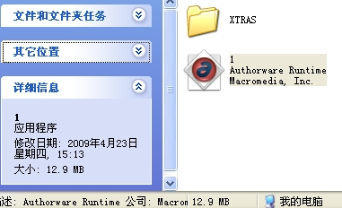
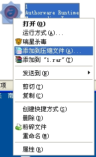

如何分卷压缩
首页
站务管理
#1 如何分卷压缩 作者：有志青年 发表时间：2009-8-7 15:20:26

以这个12m的文件为例，简单压缩，远远大于500k

右键选中这个文件，选择添加到压缩文件
选择分卷压缩，大小多少呢？有个讨巧的办法，3.5的盘大小是1.44M，所以，我们只要先选择3.5寸软盘，然后去掉最高位就ok了，看到截图中最上方的那个分卷的数据了吧
分卷压缩后的结果
［ 失落刀 于 2009-8-7 17:59:05 时奖励此帖[金币加 20 威望加1］
#2 Re:如何分卷压缩 作者：小丸.net 发表时间：2009-8-7 16:41:56
有志的歪门邪道真多．
#3 Re:如何分卷压缩 作者：裁决殿雪月 发表时间：2009-8-7 18:43:04
学习了，强啊
#4 Re:如何分卷压缩 作者：慎独 发表时间：2009-9-5 13:09:13
怎么不行呢？还是传不上？
#5 Re:如何分卷压缩 作者：飞哥 发表时间：2009-9-11 11:20:14

#6 Re:如何分卷压缩 作者：飞哥 发表时间：2009-9-11 11:20:31
传不上
#7 Re:如何分卷压缩 作者：茗弈宽容 发表时间：2011-12-6 15:53:15
分了怎么传不上呢？